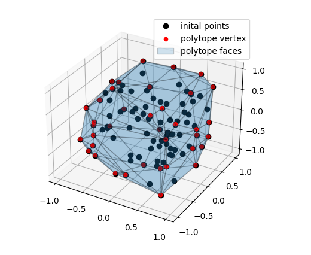
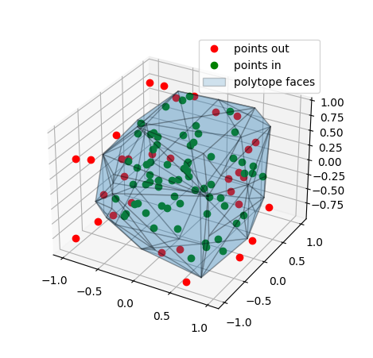

Find a half-plane representation of a point cloud
A simple example program for find a half-plane representation of a set of vertices
from pycapacity.objects import Polytope # import polytope object
import numpy as np
N = 100 # hundred vertices
m = 3 # space dimension
points = np.array(np.random.rand(m,N))*2-1 # points
# create a polytope object
p = Polytope()
# find the half-plane representation and vertezx representation
# finding the convex hull of the points
p.find_from_point_cloud(points)
print('A: \n',p.H, '\nb: \n',p.d)
# check if zero is inside the polytope
print('Zero is inside: ',np.all(p.H@np.zeros(m) <= p.d))
The output of this code is something similar to this:
A:
[[ 4.28104029e-01 -8.31204261e-01 -3.54720195e-01]
.....
[-9.68921041e-01 -2.31204575e-01 8.79571563e-02]]
b:
[1.10637503 0.98370877 0.97940547 0.99545632 0.99011297 0.93456775
....
0.90698497 0.90077881 1.04799771 0.96400478]
Zero is inside: True
# plotting the polytope
import matplotlib.pyplot as plt
from pycapacity.visual import * # pycapacity visualisation tools
fig = plt.figure(4)
# draw faces and vertices
plot_polytope(plot=plt, polytope=p, label='polytope', edge_color='black', vertex_color='red', alpha=0.2)
plt.plot(points[0,:],points[1,:],points[2,:],'ko',label='inital points')
plt.legend()
plt.show()
The output of this program will be an image of visualised all the inital points in black, the real vertices (convex hull) in red as well as the found faces described by the inequalities \(Àx\leq b\)
Classify points in or out the polytope
# generate points to classify
points_to_classify = np.array(np.random.rand(m,N))*2-1 # points
# classify the points
points_in, points_out = [], []
for point in points_to_classify.T:
if np.all(p.H@point <= p.d):
points_in.append(point)
else:
points_out.append(point)
points_in = np.array(points_in).T
points_out = np.array(points_out).T
# plotting the polytope and the points
fig = plt.figure(5)
# draw faces and vertices
plot_polytope(plot=plt, polytope=p, label='polytope', edge_color='black', show_vertices=False, alpha=0.2)
# points out in red
plt.plot(points_out[0,:],points_out[1,:],points_out[2,:],'ro',label='points out')
# point in in green
plt.plot(points_in[0,:],points_in[1,:],points_in[2,:],'go',label='points in')
plt.legend()
plt.show()
The output of this program will be an image of visualised classified points in or out of the polytope
